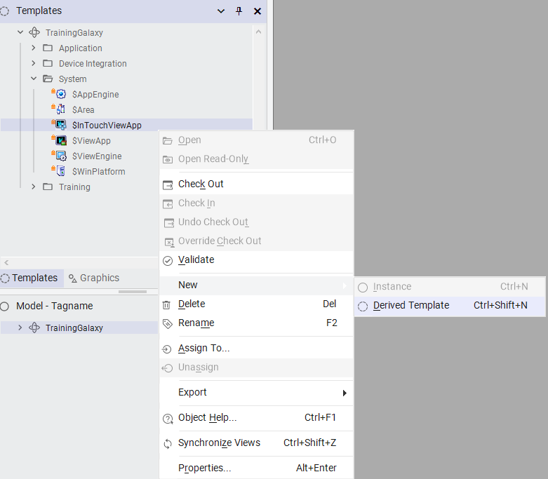
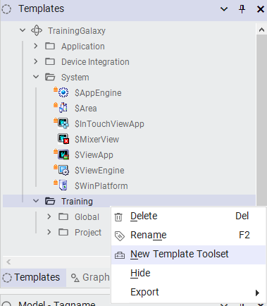
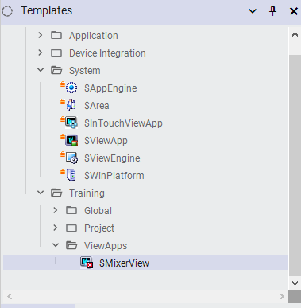
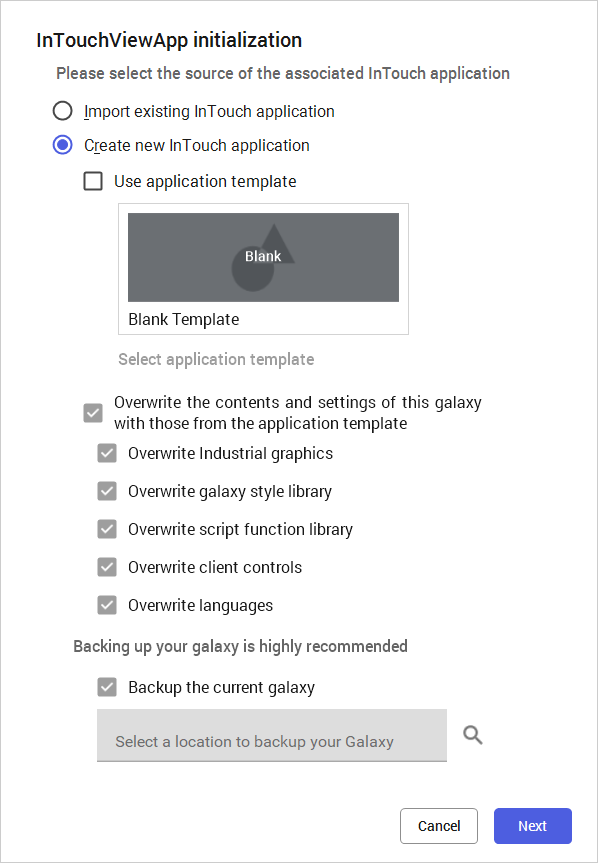
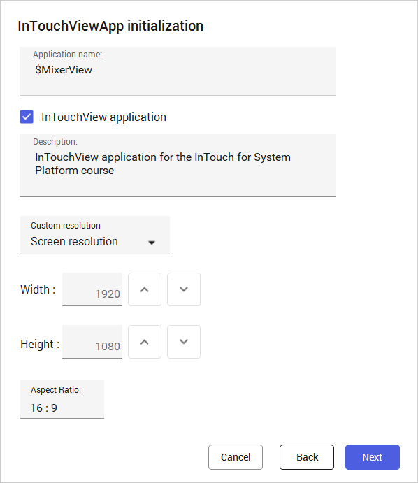
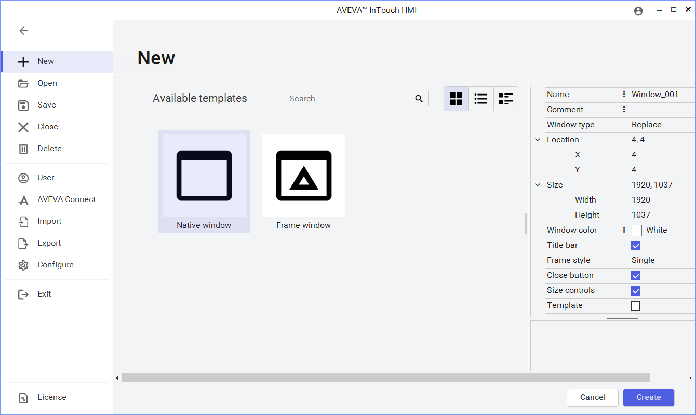
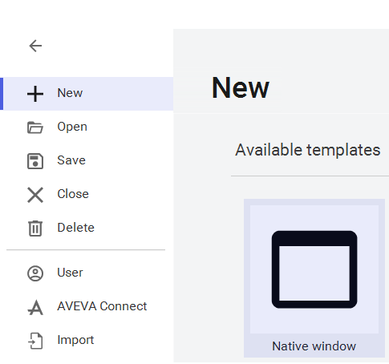
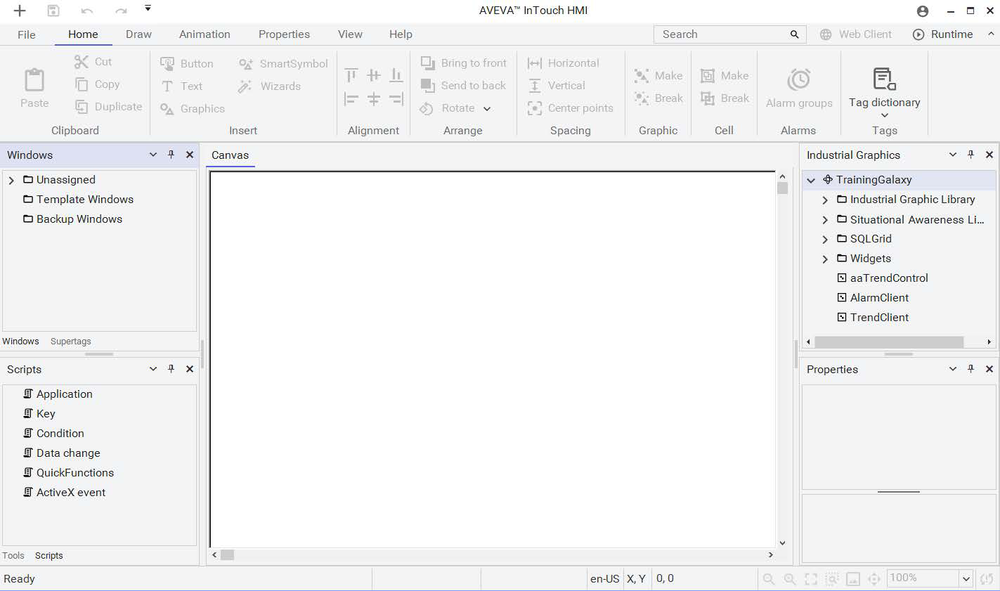

Module 2 — Getting Started | Pages 47–54
In this lab you will create the foundation for every subsequent exercise in this course: a Managed InTouch application inside your Galaxy. By the end of the lab you will have a derived template named $MixerView, a dedicated toolset to keep it organized, and a fully initialized InTouch application ready for window design. Because this application is "managed," it lives inside the Galaxy and inherits all of the check-in/check-out, deployment, and security benefits that come with that status.
When an InTouch application is created from within the System Platform IDE rather than opened as a standalone file, it becomes a first-class Galaxy object. This distinction has real consequences for day-to-day work. A managed application can be checked out by one developer, checked back in when changes are complete, deployed through the IDE to a target node, and restricted by Galaxy security policies. The same workflow that governs platform objects and automation templates governs the InTouch application as well.
You cannot create an instance directly from the base $InTouchViewApp template. System Platform enforces a two-step process: first derive a template, then create instances from that derived template. This rule protects system-level templates from accidental modification and enforces a consistent hierarchy across all Galaxies.
In the IDE, navigate to the Templates tab and expand TrainingGalaxy, then expand the System toolset. Right-click $InTouchViewApp and select New > Derived Template. The new template appears inside the System toolset. Rename it $MixerView — this will be the template from which all InTouch application instances in this course are created.

Leaving your new template inside the System toolset would clutter it alongside dozens of other system-level templates. A better practice is to create a dedicated subtoolset that groups related templates together. Right-click the Training toolset and select New Template Toolset. Name the new toolset ViewApps, then drag $MixerView into it.


Double-click $MixerView to launch the initialization wizard. The first dialog asks whether to create a new InTouch application or import an existing one. Leave the default Create new InTouch application selected. You can also leave the overwrite checkboxes at their defaults — they control which Galaxy resources (style libraries, script function libraries, industrial graphics, client controls, and languages) will be copied into the new InTouch application. A backup is recommended and checked by default. Click Next.

The second page of the wizard presents several important configuration choices. First, check the InTouchView application checkbox. This is a critical decision point. When checked, InTouch will rely on built-in Application Server features for I/O access, alarms, history, and security. When unchecked, InTouch falls back to its own legacy features: AccessNames for data access, InTouch-native alarms, InTouch historical logging, and InTouch security. For a System Platform deployment, you almost always want this checked.
Next, enter a description such as "InTouchView application for the InTouch for System Platform course". The description field is purely informational but becomes valuable when multiple InTouch applications exist in a Galaxy and you need to distinguish between them.
Note the Custom resolution feature below the description. The default Screen resolution setting uses whatever resolution your development machine currently has. Custom resolution lets you specify a different target resolution — for example, 1920×1080 — so that the application will display correctly on production nodes that may have different monitors than your development workstation. Click Next to continue.

After a few moments, AVEVA InTouch HMI WindowMaker opens automatically and displays the New window area of the backstage view. This is the development environment where you will build all of your display windows in later labs. For now, you are simply confirming that the application initialized correctly. Click the left arrow button in the top-left corner of the backstage view to return to the main WindowMaker canvas.


The main view of WindowMaker appears — a blank canvas flanked by the Windows panel, Scripts panel, Industrial Graphics panel, and Properties panel. This marks the successful creation of your Managed InTouch application. The canvas is empty because you have not yet created any windows; that is the subject of the next lesson, where you will learn about the WindowMaker environment in detail, and the lab after that, where you will build the actual windows.

The base $InTouchViewApp template is a system template. You must first create a derived template (like $MixerView) and then create instances from that derived template. This enforces a consistent template hierarchy and prevents direct modification of system templates.
Checking this box tells InTouch to rely on built-in Application Server features for I/O access, alarms, history, and security — rather than using legacy InTouch-specific features like AccessNames and InTouch-native alarms. For System Platform deployments, this is the recommended setting.
The ViewApps toolset provides organizational structure within the Galaxy's template hierarchy. It groups your InTouchViewApp-derived templates together, separate from system templates and other template types, making the Galaxy easier to navigate and maintain.
Screen resolution takes the current development machine's resolution and uses it as the target on the production node. Custom resolution lets you specify a different resolution (e.g., 1920×1080) for the production environment, regardless of what resolution your development machine uses.
You see the main WindowMaker canvas with its surrounding panels (Windows, Scripts, Industrial Graphics, Properties). The canvas is empty because no display windows have been created yet — the initialization only created the InTouch application container, not the individual windows that will eventually hold graphics and animations.
Source: AVEVA InTouch for System Platform 2023 Training Manual, Module 2, Lab 2 (pages 47–54)